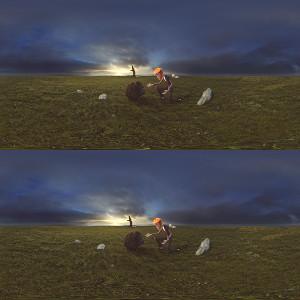
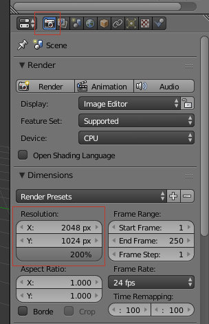
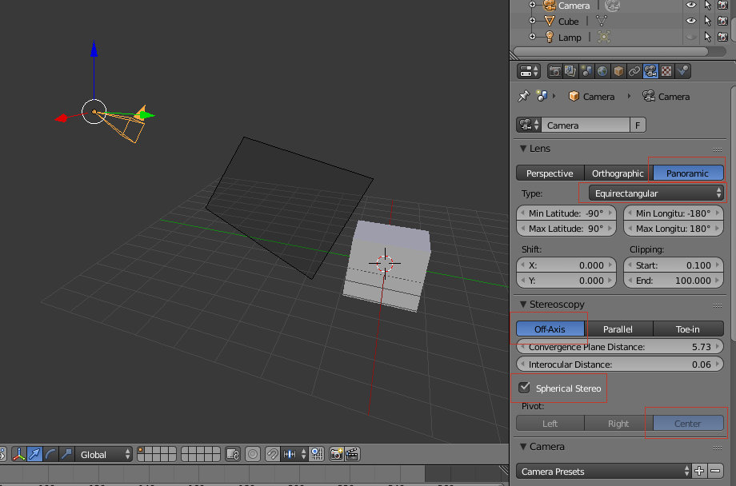
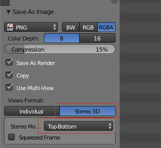

Renderização em Stereo
- Versão
- >= 2.75
- Renderizador
- Cycles
Esfera em estereoscopia
No momento em que escrevemos este texto, a funcionalidade que permite renderizar uma esfera em stereo (panorama com estereoscopia) ainda não está disponível no Blender oficial. É previsível a sua integração a breve trecho mas enquanto não está disponível poderá utilizar as versões compiladas pelo programador responsável pela funcionalidade.
As instruções abaixo apresentadas permitem renderizar um panorama com estereoscopia para ser visto através do sistema Oculus Rift ou com um dispositivo Android com equipamento de realidade virtual (Cardboard, Durovis Dive, etc.). As instruções podem ser adaptadas a seu gosto mas deverão ser seguidas com rigor caso pretenda utilizar o serviço VRAIS ou o projeto OpenLab ESEV Cardboarder.
1-Comece por definir a resolução da imagem final. Na realidade, o desejável é que a imagem final seja composta pela combinação de duas imagens com 4096x2048.
No entanto, não é necessário estar sempre a renderizar com uma resolução tão elevada. Na imagem abaixo é apresentada uma resolução de 2048x1024. Quando quiser renderizar a imagem final, basta configurar a percentagem para 200%.
2- Na aba Render Layers, ative a opção Views e mantenha a configuração apresentada. Compare com a imagem abaixo para verificar as configurações.

3- Nas opções da câmara, escolha uma lente Panoramic do tipo Equirectangular.
No painel Stereoscopy, escolha a opção Off-Axis e o Pivot Center. Ative a opção Spherical Stereo (se não tiver esta opção, isso significq que não está a usar uma das versões disponibilizadas).
A Convergence Plane Distance (é representado na janela 3D View por um plano com transparência) é a distância para o ponto no espaço onde os olhos do espetador irão convergir. Normalmente, é boa opção definir a Convergence Plane Distance para o principal ponto de interesse da sua cena.
A Interocular Distance é a distância entre os dois olhos.
4- Renderize.
5- Depois de renderizar, o Blender vai armazenar as duas imagens na sua memória. Quando estiver a gravar a imagem, não se esqueça de escolher a opção Top-Bottom. Pode gravar em qualuqer formato mas o serviço VRAIS e o projeto OpenLab ESEV Cardboarder só aceitam JPEG.
Animação em estereoscopia
Soon